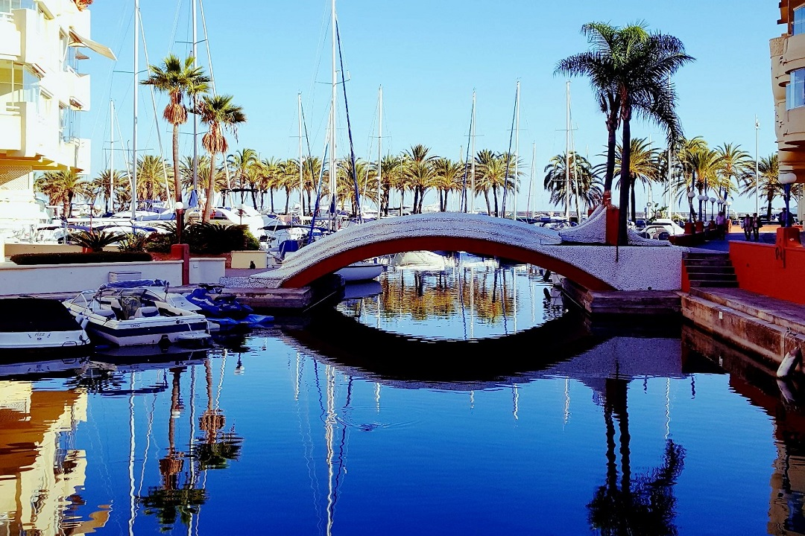

Andalucia
Andalucía es una comunidad autónoma española reconocida como nacionalidad histórica por su Estatuto de Autonomía.5 Compuesta por ocho provincias: Almería, Cádiz, Córdoba, Granada, Huelva, Jaén, Málaga y Sevilla. Su capital y ciudad más poblada es Sevilla, sede del Consejo de Gobierno de la Junta de Andalucía, del Parlamento y de la presidencia de la Junta de Andalucía. La sede del Tribunal Superior de Justicia de Andalucía se encuentra en Granada. Es la comunidad autónoma más poblada del país (8 538 376 habitantes en 2023)2 y la segunda más extensa (87 599 km²) —tras Castilla y León—. Se encuentra ubicada en la parte meridional de la península ibérica; limitando al oeste con Portugal, al norte con las comunidades autónomas de Extremadura (Badajoz) y Castilla-La Mancha (Ciudad Real y Albacete), al este con la Región de Murcia, al suroeste con el océano Atlántico y al sur con el mar Mediterráneo y Gibraltar. A través del estrecho de Gibraltar, separado por 14 km en su parte más estrecha, se encuentran Marruecos y Ceuta en el continente africano. En 1981 se constituyó en comunidad autónoma, al amparo de lo dispuesto en el artículo segundo de la Constitución Española de 1978, que reconoce y garantiza el derecho a la autonomía de las nacionalidades y regiones españolas.
|  |

|
|||